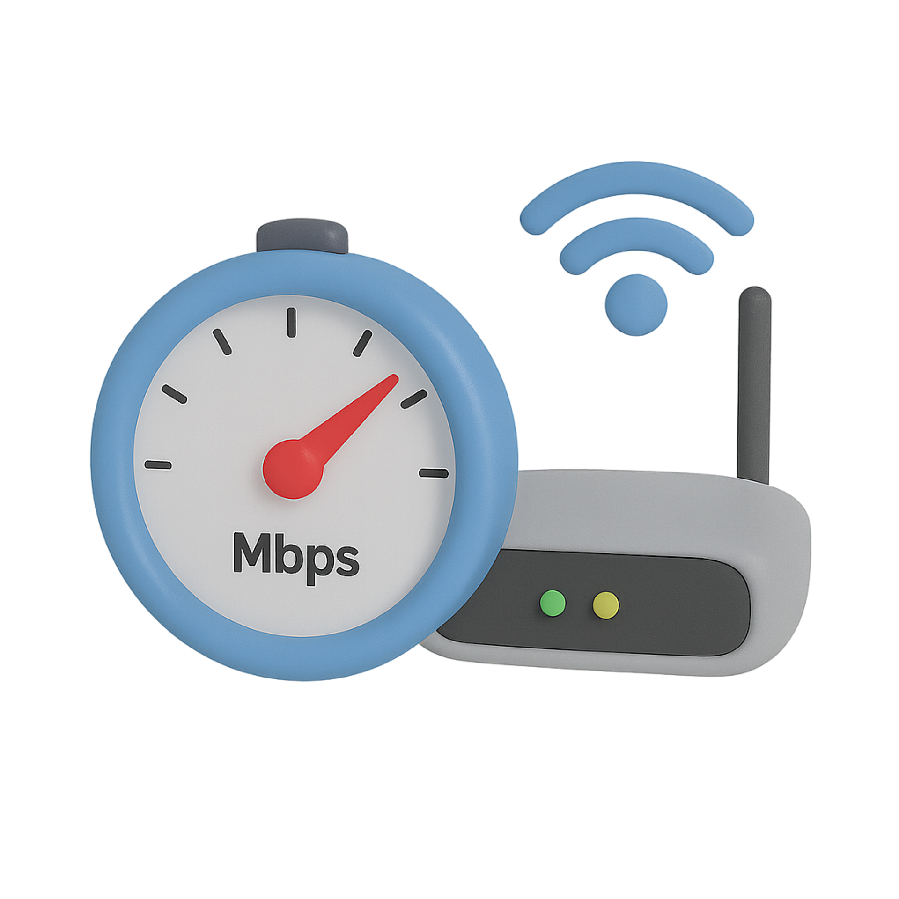

Breyner Andrés Jiménez Medina
El ancho de banda es un concepto fundamental en las redes de comunicación modernas. Representa la capacidad de transmisión de datos en una red y es clave para el correcto funcionamiento de internet. En la actualidad, el acceso a información, entretenimiento y servicios digitales depende directamente de la calidad del ancho de banda disponible.
En el mundo actual, donde la tecnología y la conectividad son esenciales, el ancho de banda se convierte en un factor determinante en la experiencia del usuario. Este concepto permite medir la cantidad de datos que pueden ser transmitidos en un tiempo determinado, lo que influye directamente en la velocidad de navegación, la calidad de los videos en streaming y el rendimiento de aplicaciones en línea.
Comprender el ancho de banda es importante porque ayuda a elegir mejores servicios de internet, optimizar recursos tecnológicos y garantizar una comunicación eficiente en diferentes ámbitos como la educación, el trabajo y el entretenimiento.
El ancho de banda se define como la cantidad máxima de datos que pueden transmitirse a través de una conexión de red en un tiempo determinado. Se mide en bits por segundo (bps), siendo comunes unidades como Mbps (megabits por segundo) o Gbps (gigabits por segundo).

Un ejemplo claro del ancho de banda se observa al comparar dos conexiones de internet. Una conexión de 10 Mbps permitirá navegar y ver videos con cierta limitación, mientras que una conexión de 100 Mbps permitirá realizar múltiples actividades simultáneamente sin interrupciones, como ver videos en alta definición, descargar archivos y jugar en línea.
En entornos laborales o educativos, un mayor ancho de banda permite realizar videollamadas estables, compartir información en tiempo real y mejorar la productividad general.
El ancho de banda es un elemento esencial en la era digital, ya que influye directamente en la calidad y velocidad de las conexiones a internet. Su importancia radica en que permite el funcionamiento eficiente de aplicaciones, plataformas digitales y sistemas de comunicación.
A medida que la tecnología avanza, la necesidad de contar con un mayor ancho de banda se vuelve más evidente, convirtiéndose en un factor clave para el desarrollo tecnológico y la conectividad global.